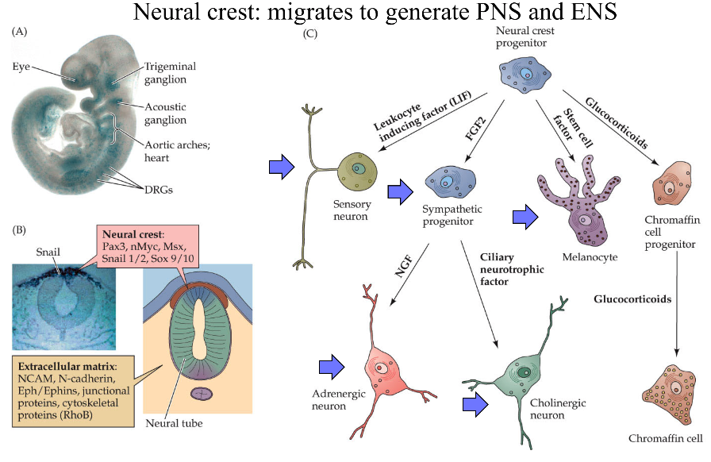
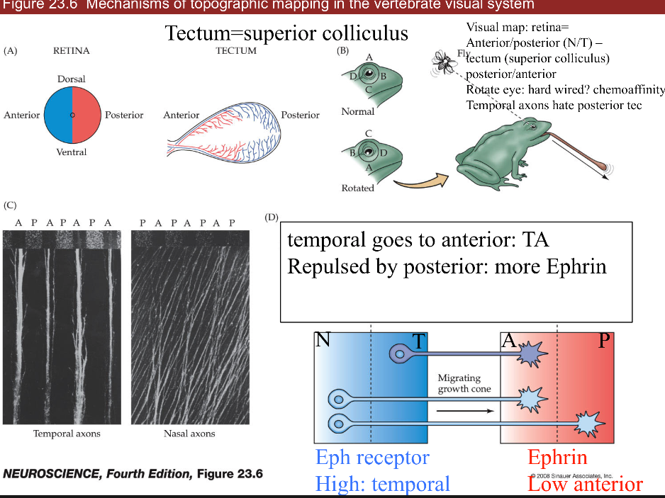
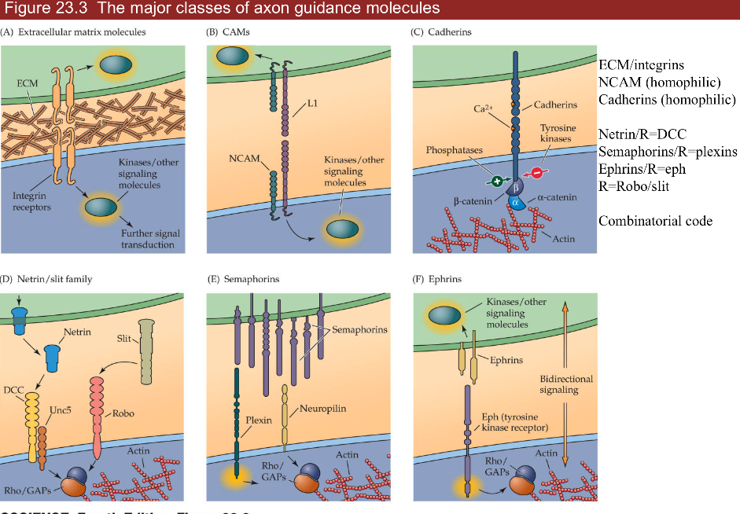

Development#
notes from Purves et al. "Neuroscience", 5th edition (chapter numbers in headers) + Intro to neurobiology course at UVA
About this chapter
Purves chapters 22 to 25, in the order a nervous system is built. Early development folds the embryo into a neural tube, and gradients of morphogens (BMP from the roof plate, hedgehog from the floor plate) tell each cell what to become. Growth cones then steer axons to their targets with attractive and repulsive cues such as netrin, slit and ephrins.
Once axons arrive they compete. Targets make only a limited amount of neurotrophin, so many of the first connections are removed, and activity decides which ones stay during critical periods (the ocular dominance experiments in cats are the main example). The last section asks why the peripheral nervous system can regrow and the central one mostly can’t.
22 early development#
A cell’s position along the neural tube sets its fate: low hedgehog near the roof plate gives sensory neurons and interneurons, high hedgehog near the floor plate makes motor neurons. Hox genes then pattern the head-to-tail axis.
ways to study
top-down: rosy retrospection
bottom-up: e.g. LTP/LTD
human disease: stroke-by-stroke
development=ontogeny
timeframe
month 1 - gastrulation
most sensitive time for mom
month 2-5 - cells being born
up to year 2 - axon guidance / synapse formation
gastrulation - process by which early embryo undergoes folds = shapes of NS
diseases
spina bifida - neural tube fails to seal
vitamin B12 can fix this
anencephaly - neural tube fails to close higher up
parts
roofplate at top (back)
floorplate on bottom (stomach)
neural crest - pinches off top of roofplate
neuroblasts = classic stem cells
assymetric division - cells generate themselves and differentiated progeny
ultimate stem cell - fertilized eggs
differentiation
cells made by neuroblasts decide what they are going to become
morphogens
BMP - roofplate
cyclopia - fatal defect in BMP
Hedge hogs - at floor plate
Retinoids - axial, affect skin
affected by thalidomide - helps morning sickness but causes missing limb segments
also affected by accutane
FGFs - axial symmetry
Wnts - skin, gut, hair
loss of wnts is loss of hair
floor plate loses function after embryogenesis except glioblastoma
measure BMP and HH gradient to figure out where you are
treat ALS by adding HH to make more alpha motor neurons
dorsal direction
roofplate makes BMP
low HH - interneurons, sensory neurons (ex. nociceptors)
even BMP/HH - sympathetic
high HH - more motor neurons
floorplate makes HH (hedge hog)
axial specification (anterior/posterior)
tube swells into bulbs that become cerebellum, superior colliculus, cortex
homeotic genes = hox genes - set of genes (transcription factors) in order on chromosome
order corresponds to order of your body parts
rhombomeres - segments in brainstem made by hox gene patterns
lineages
when neuroblast is born, starts producing progeny (family tree of neuron types)
very often, cells are produced in certain order
timing: cell-cell interations and tyrosine kinases determine order
first alpha neurons, then GABAergic to control those, last is glia
neural crest function
migratory - moves out and divides

Fig. 133 Figure 1. The neural crest pinches off the top of the neural tube (B) and migrates through the embryo (A). Its cells become sensory neurons, sympathetic adrenergic and cholinergic neurons, melanocytes and chromaffin cells, depending on the signals they meet (C).#
neuroblastoma - developed early - severe problem because missing parts of NS
makes DRG and associated glial cells (schwann cells)
makes sympathetic NS and target ganglia, enteric NS, parasympathetic NS targets
makes melanocytes - know how to migrate and divide but can make melanoma (cancer)
cortex is made inside out (6->1)
starts with stem cells called radial glia
cortical dysplasia - missing a layer / duplicating a layer
small part with 2 layer 3s - severe epilepsy
cell death
1/2 of cells die in development
axon guidance (ch 23)
each cell born and axon grows and are guided to a target
dendrite basically follows same rules
synapse formation (ch 23, 24)
pruning and plasticity
NMDA receptor type
form synapses and if they don’t look right - get rid of them
K1/K-1 synapses breaking and forming
after age 21, K-1 starts increasing and net loss of synapses
23 circuit formation#
Growth cones read a combinatorial code of guidance molecules. Ephrin gradients map the retina onto the tectum, netrin draws axons to the midline, and slit pushes them away once they have crossed. Then neurotrophins decide which connections survive.
growth cone - motile tip of axon
actin tip
lamellipodium - sheet (hand)
filopodium - huge curves (fingers)
chemo attraction (actin assembly) and chemo repulsion (actin disassembly)
microtubule shaft - tubulin is much more cemented in
mauthner cell of tadpole - first recorded growth cone
can’t regrow (that’s why we can’t regrow spinal cord)
signals in growing axons
pioneer axons (Betz cells) are first - often die
follower axons (other Betz cells) can jump onto these and connect before pioneer dies
trophic support - neuron survives on contact
frog tectum (has superior colliculus) with map of retina

Fig. 134 Figure 2. Mapping the retina onto the tectum (superior colliculus). Temporal retinal axons, which carry more Eph receptor, are repelled by the high ephrin in posterior tectum and stop in anterior tectum. In a stripe assay (C) temporal axons avoid posterior membranes while nasal axons grow on both. A frog with its eye rotated (B) strikes in the wrong direction because the map is hard-wired.#
ephrin (EPH) repulses axon
retinal NT -> tectum AP
axons have different amount of EPH receptors (in retina temporal has more than nasal)
gradient of EPH (in tectum anterior has less than posterior)
if we flip eye upside down (on nasal-temporal axis), image will be upside down
3 classes of axon guidance molecules

Fig. 135 Figure 3. The main classes of axon guidance molecules: extracellular matrix with integrins, CAMs such as NCAM, cadherins, netrin and slit with their receptors DCC and Robo, semaphorins with plexins, and ephrins with Eph receptors.#
ECM/integrins
NCAM (homophilic—binds to another neuron that is NCAM),
follower neurons bind to pioneer through NCAM-NCAM interactions
Cadherin (homophilic)
involved in recognition of being some place
4 important ligands/receptors
ephrins/eph
gradient of eph receptor
netrin/dcc = guidance moleculereceptor = DCC
attracts axons to floorplate (midline)
cells without DCC don’t cross midline
slit/robo - receptor is slit
chases axons off (away from midline)
axons not destined to cross midline are born expressing robo
axons destined to cross the midline only express robo after crossing
if DCC (-) and robo (-) will continue wandering around
robo 4 is associated with Tourette’s
semaphorins/plexins
combinatorial code - use combinations of these to guide axons
these are the same genes that move cancer around
synaptic formation
neuroexins - further recognition
turn up in autism and schizophrenia
DSCAM
associated with Down’s syndrome
doesn’t use gradients
makes different kinds of proteins by differential slicing
competition
neurotrophins are secreted by muscle
in early development, a muscle fiber has many alpha motor neurons innervating it
all innervating neurons suck up neurotrophin and whichever sucks up most, kills all the others
eventually, each muscle fiber is innervated by one alpha motor neuron
only enough neurotrophin in target cells for a certain number of synapses
happens everywhere
ex. sympathetic ganglia
ex. sensory neurons in skin get axons to correct cell types based on neurotrophin
merkel - BDNF
proprioceptor - NT3
nociceptor - NGF
ex. muscles - produce NGF
treating ALS with NGF hyperactivates sensory neurons with trkA -> causes chicken pox
signals/receptors
NGF - trk a (Trk receptor - survival signaling pathways)
BDNF - trk b
NT3 - trk b and c
NT4/5 - trk b
all bind p75 (death receptor)
want to keep neurotrophins local, because there aren’t that many of them
24 plasticity in systems#
Experience shapes circuits most during critical periods, which differ by system (the table). Hebb’s rule is the mechanism: inputs that fire together, like the two eyes, strengthen their synapses through NMDA receptors, and inputs that are silenced lose territory.
experience-dependent plasticity - critical periods and molecular regulators for some neural systems (table 24.1)
system
species
critical period (postnatal)
confirmed molecular regulators
neuromuscular junction
mouse
prior to day 12
ACh
cerebellum
mouse
day 15–16
NMDA, mGluR1, Gq, PLCβ, PKCγ
lateral geniculate nucleus layers
mouse, ferret, cat
prior to day 10
ACh, cAMP, MAOA, NO, MHC1, CREB
ocular dominance
cat, rat, mouse, ferret
3 weeks–months
GABA, NMDA, PKA, ERK, CaMKII, CREB, BDNF, tPA, protein synthesis, NE, ACh
orientation bias
cat, mouse
prior to day 28
NR1, NR2A, PSD95
somatosensory map
mouse, rat
prior to day 7–16
NR1, MAOA, 5HT1B, cAMP, mGluR5, PLCβ, FGF8
tonotopic map (cortex)
rat
days 16–50
ACh
absolute pitch
human
before 7 years
unknown
taste, olfaction
mouse
none
GABA, mGluR2, NO, neurogenesis
imprinting
chick
14–42 hours
catecholamines
stress, anxiety
rat, mouse
prior to day 21
hormones, 5HT1A
slow-wave sleep
cat, mouse
day 40–60
NMDA
sound localization
barn owl
prior to day 200
GABA, NMDA
birdsong
zebra finch
prior to day 100
GABA, hormones, neurogenesis
language
human
0–12 years
unknown
ex. ducks imprinting is non-reversable
learning is crystallized during critical period
CREB and protein synthesis
NMDA receptors
epigenetics - histones control transcription and other things
follow Hebb’s postulate - fire together, wire together
different eyes firing together will sync up (NMDA receptors to strengthen synapses)
systems
ocular dominance
left/right neurons terminate in adjacent zones
LGN in cortex uses efferents just like superior colliculus
label injected into retina can make it into cortex
cat experiments
some cells see only one eye, some see both
cats need to form visual map in short critical period (<6 days)
this is why you need cochlear implant early
both eyes open - equal OD columns
one eye closed - unequal OD columns
branches coming out of LGN neurons grow more branches based on relative light exposure (they compete for eye’s real estate)
strabismus = lazy eye - poor coordination with one of the muscles
one eye is not quite seeing
treat with patch on good eye -> allows bad eye to catch up since eyes compete for ocular dominance columns
more stimulus = more branches
dye from retina goes through thalamus into cortex
rabies virus does same thing: cell->ganglion->brain
tonotopic map
connection between MSO and inferior/superior colliculus
playing one tone increases representation
playing white noise disorganizes map
birdsong
hear song 10-20 times when young - crystallized
afterwards can’t learn new skills
stress
early stress sets stress points later in life
uses serotonin
shifts
superior colliculus - integrate visual, auditory, motor to get X,Y coordinate
auditory map - plastic (but only when young)
visual map - not plastic
if you shift visual map (with a prism), auditory map can shift over to meet the visual
optic neuritis - ms optic nerve disease that shifts map
only young animals can shift unless they were shifted before and are now unadapting
25 repair and regeneration#
The PNS regrows along the Schwann cell sheath at about the speed of slow axonal transport. The CNS forms a glial scar instead, and adult neurogenesis is limited to a few places such as the hippocampus and the olfactory bulb.
full repair - human PNS - skin, muscles
1-2 mm/day growth - speed of slow axonal transport
thinnest axons first (thermal receptors and nociceptors)
proprioceptors last
process
perinerium / schwann cells surrounds axons - helps regeneration
growth cones that are cut form stumps -> distal axons degenerate = walerian degeneration
macrophages come in and eat up the damaged stuff
neurotrophins are involved
miswiring is common - regrow and may not find right target
bell’s palsy - loss of facial nerve - recovers with miswiring (salivary / tear)
neuromuscular junctions (NMJ)
damaged cells leave synaptic ghost = glia and protein matrix for nerve to regrow into
repairs easily after heavy training
no repair / glial scar - human CNS
no ghost because so spread out
glia cover wound (scar) but can’t develop further
has astrocytes and oligodendrocytes (types of glial cells)
don’t support regrowth
involved in scarring
microglia - from immune system
control inflammation
release cytokines
nogo - protein that blocks regrowth (but there are other proteins as well)
we try repairing with shunts - piece of sciatic nerve from other part of body with schwann cells from PNS to try to repair a connection in the CNS
stem cell regeneration - put new neurons being formed, 2 places in humans
non-human examples
floor plate of lizards can make new tail
fish retina always making new cells
canary brain part has stem cells that learn new song every year
small C14 incorporation after early development
suggests we don’t regenerate neurons
C14 was from nuclear testing
human areas that do regenerate
hippocampus
memories you store temporarily
subventricular zone makes glomeruli in olfactory bulb cells
turnover daily
sensory neurons and their targets constantly die and regenerate
niche - places where stem cells stay alive
ex. places in CNS with WINT molecular signals
damage control - remove these signals for apoptosis = cell death
glutamate increase - excitotoxicity
can stop with NMDA blockers
induce a coma by cooling them down or GABA drugs
cytokines increase - immune system (like neurotrophins), inflammation
hypoxia/stress
neurotrophin withdrawal
in stress times neurotrophin goes down
Key ideas
Position sets fate: BMP from the roof plate and hedgehog from the floor plate tell neural tube cells what to become, and Hox genes pattern head to tail.
Growth cones steer with a combinatorial code of attractive and repulsive cues: netrin, slit, ephrins and semaphorins.
About half of developing cells die, and targets make only enough neurotrophin for some connections, so inputs compete and the losers retract.
Activity decides the competition during critical periods: closing one eye early shrinks its ocular dominance columns.
The PNS regrows along Schwann cells at 1-2 mm a day; the CNS forms a glial scar, and new neurons appear only in a few places such as the hippocampus.